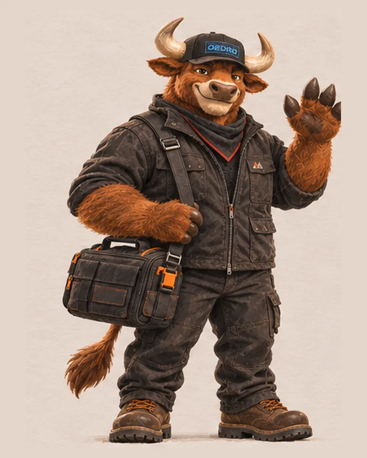
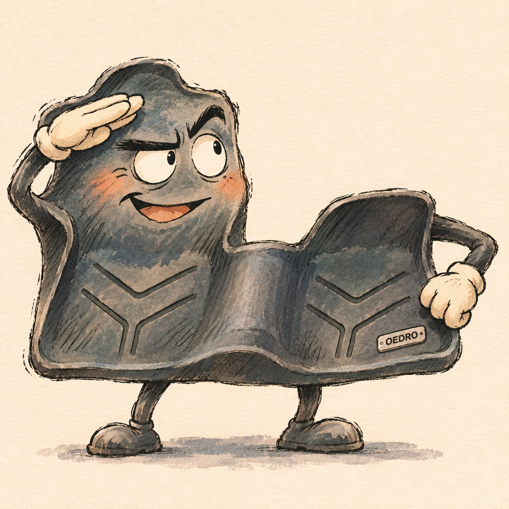
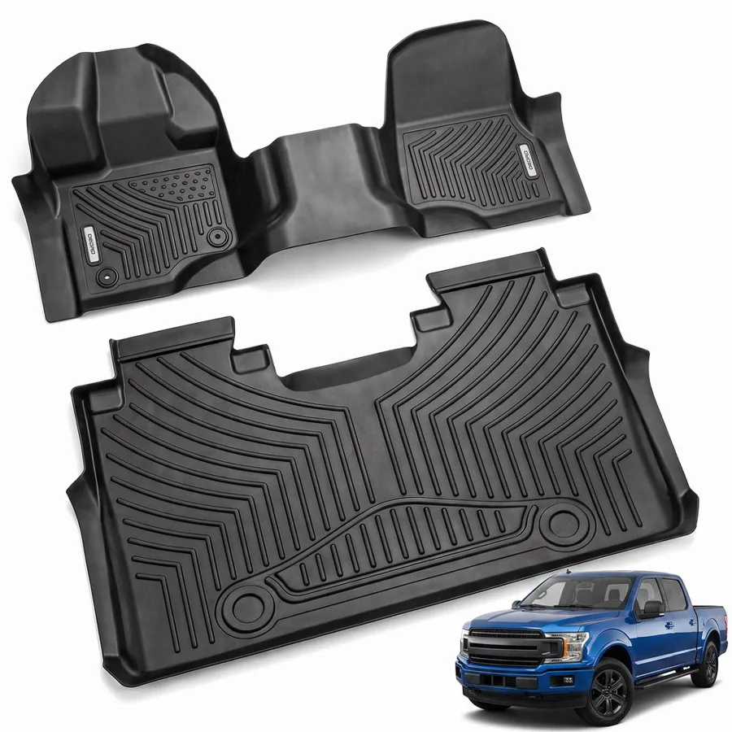
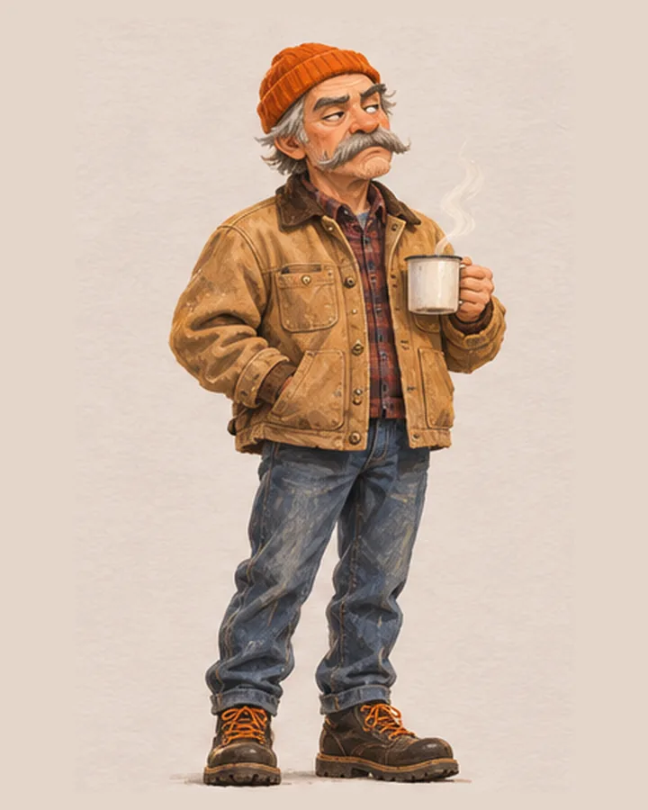
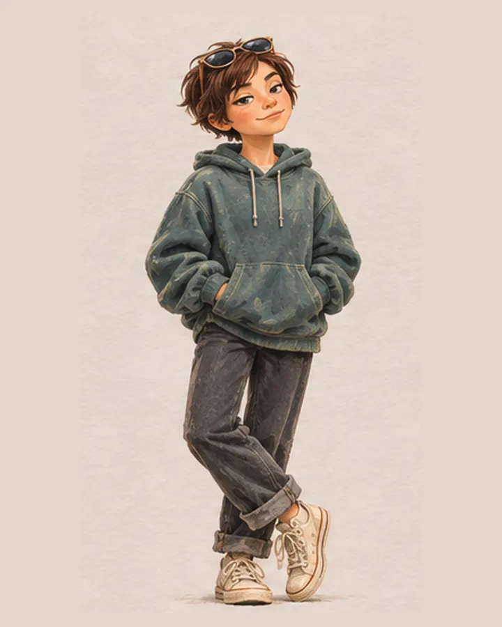
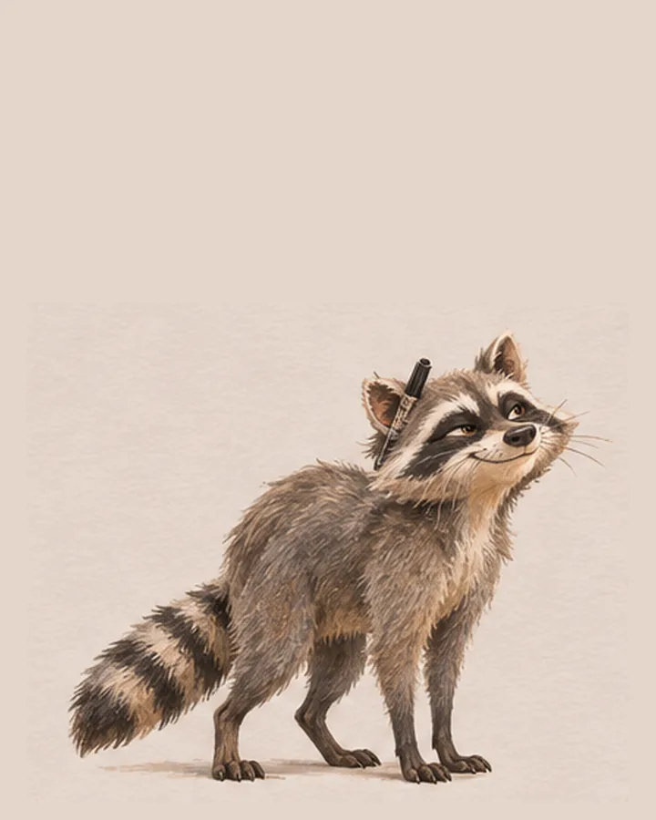
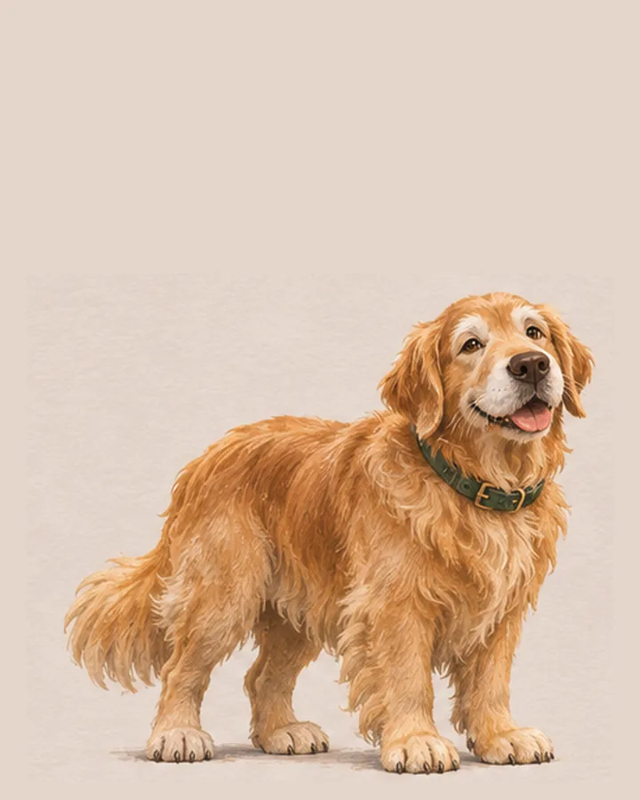
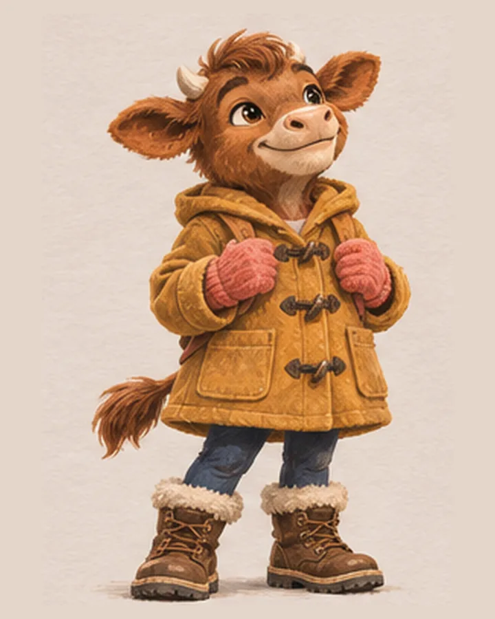
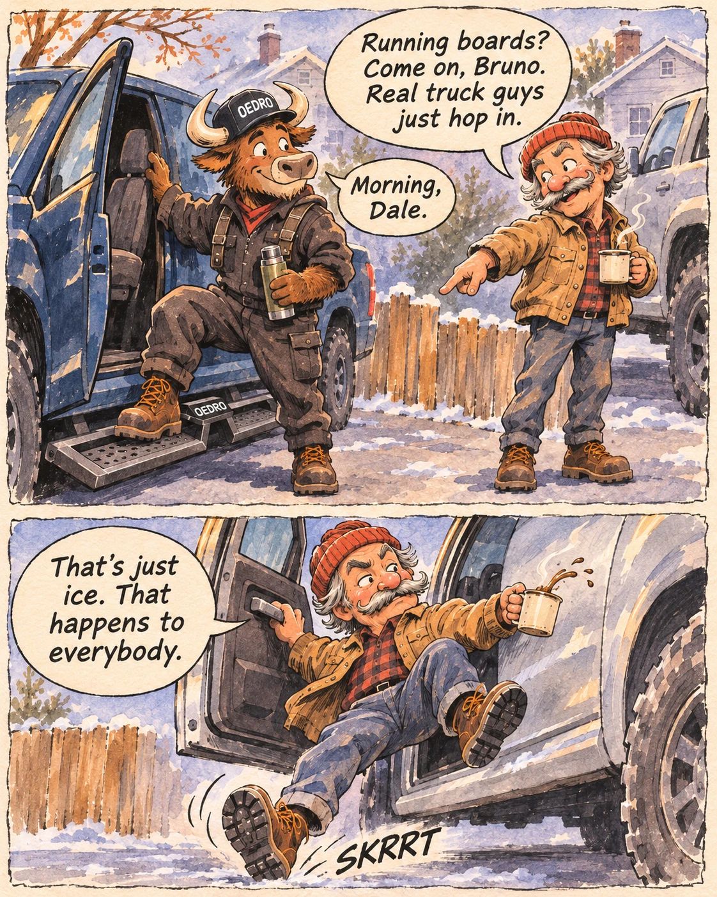
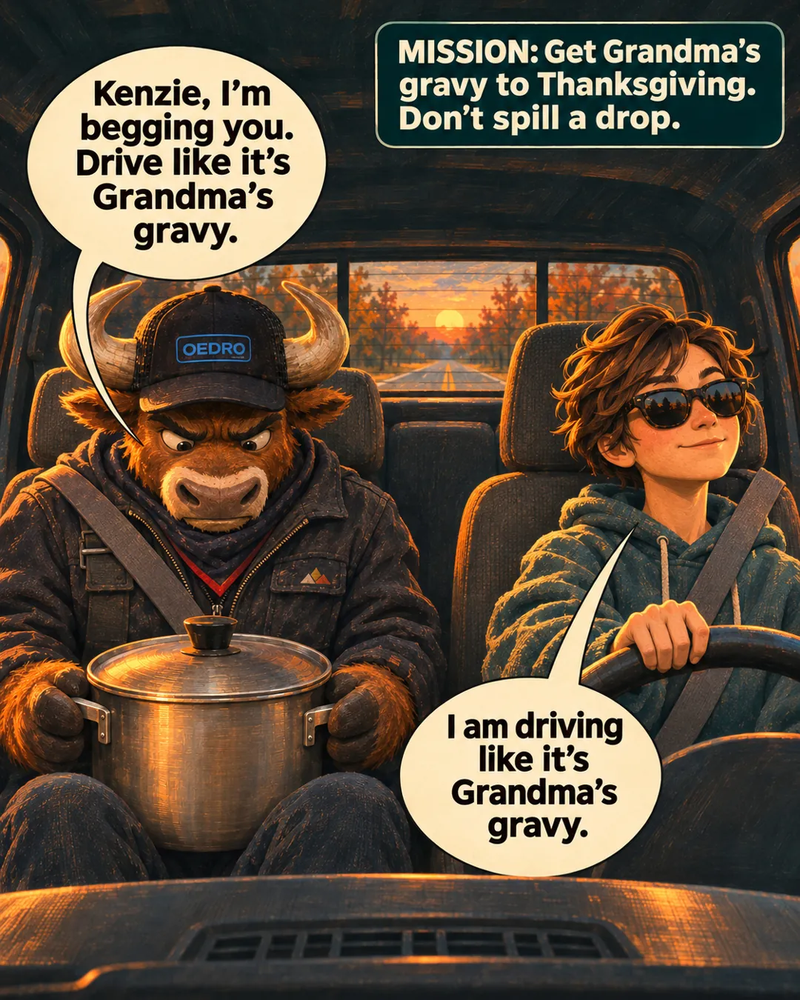

吉祥物 · 每篇都在
Bruno · 布诺
OEDRO 的吉祥物，一头穿工装、戴网帽的成年棕色公牛。性子慢，话少，凡事习惯提前安排，照顾皮卡比照顾自己还上心。嘴上嫌麻烦，最后总会帮邻居一把。
“The bed has a cover. My cap doesn’t.”货箱有盖子，我的帽子敞着。
OEDRO 社媒漫画的固定角色。故事都发生在美国一条普通住宅街上：车道、车库、邻居和节日。


吉祥物 · 每篇都在
OEDRO 的吉祥物，一头穿工装、戴网帽的成年棕色公牛。性子慢，话少，凡事习惯提前安排，照顾皮卡比照顾自己还上心。嘴上嫌麻烦，最后总会帮邻居一把。
“The bed has a cover. My cap doesn’t.”货箱有盖子，我的帽子敞着。


产品角色 · Bruno 车里的脚垫
Bruno 车里的脚垫，也是个特别认真的保镖。水彩绘本里，Matt 一紧张就耸起半边身子，一着急就拿两只大手比划，几条眉眼就能看出他在想什么。
“Relax. Whatever comes in stays with me.”放心，进来的东西都留在我这儿。
OEDRO All-Weather TPE Floor Mats for 2015–2026 Ford F-150 SuperCrew Cab（SKU EO1001W075），用第一排整片式那一块。
Matt 最在意底下的地毯，忙了一整天，收工还会说今天很平静。

隔壁邻居
Bruno 的隔壁邻居，留着八字胡，戴橙色毛线帽，开一台只做了抬高的皮卡。他坚信真汉子开素车就够，转头又去借 Bruno 的配件。两人互相较劲，他输了也嘴硬。
“Yes. But if anyone asks, I drove.”对，可要是有人问，就说车是我开的。

Dale 的女儿
二十出头，开一台 Ford Maverick。说话平静，嘴很毒，常站在 Bruno 这边拆她爸的台。
“It’s a truck, Dad.”爸，那就是一辆皮卡。

附近的浣熊
Bruno 的老对头。每晚都想翻进 Bruno 的货箱找感恩节剩菜，每次都空手回去。他只用记号笔在硬纸板上写字；Bruno 嘴上赶他，心里有点喜欢他。
“Came for the leftovers. Would not recommend.”冲着剩菜来的，我劝退。

Dale 家的老金毛
11 岁，口鼻都白了，上高车很吃力。他总有自己的主意，碰上不喜欢的安排，就在原地趴下。
不说话，全靠表情。

Bruno 的小侄女
一头 7 岁的小牛犊，戴粉色毛线手套。她记得大人说过的每句话，随时拿出来讲理，Bruno 每次都讲不过她。
“You said it. I heard you say it.”你说过的，我亲耳听见了。

